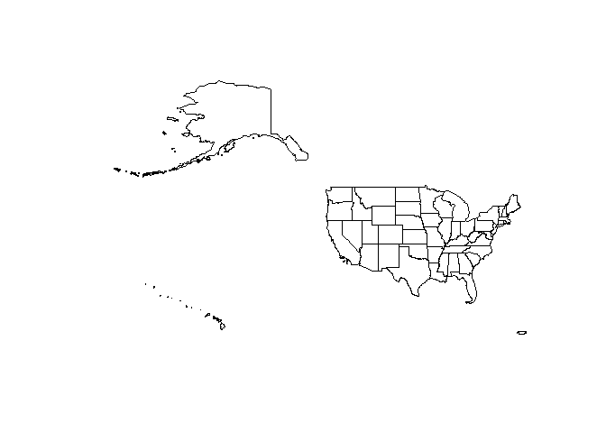
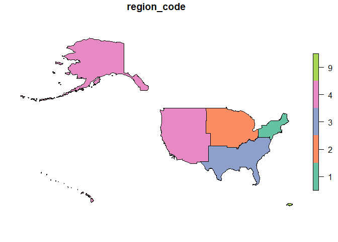

The geographic dimension plays a fundamental role in multidimensional systems. To define a geographic dimension in a multidimensional star schema, we need a table with attributes corresponding to the levels of the dimension. Additionally, we will also need one or more geographic layers to represent the data using this dimension.
We can obtain this data from available vector layers of geographic information. In simple cases, one layer is enough. We often need several layers related to each other. The relationships can be defined by common attribute values or can be inferred from the respective geographic information.
The goal of geodimension is to support the definition of geographic dimensions from layers of geographic information that can be used in multidimensional systems. In particular, through packages rolap and geomultistar.
Installation
You can install the released version of geodimension from CRAN with:
install.packages("geodimension")And the development version from GitHub with:
# install.packages("devtools")
devtools::install_github("josesamos/geodimension")Example
This is a basic example which shows you how to generate a geodimension from tables and vector layers of geographic information. It also shows how to use it.
Suppose that, for the US, we want to define a geographic dimension at the state level but also include the information at the predefined higher organization levels: division, region and country, available in the package in the us_division variable, shown below.
| division_code | division_name | region_code | region_name | country |
|---|---|---|---|---|
| 1 | New England | 1 | Northeast | USA |
| 2 | Middle Atlantic | 1 | Northeast | USA |
| 3 | East North Central | 2 | Midwest | USA |
| 4 | West North Central | 2 | Midwest | USA |
| 5 | South Atlantic | 3 | South | USA |
| 6 | East South Central | 3 | South | USA |
| 7 | West South Central | 3 | South | USA |
| 8 | Mountain | 4 | West | USA |
| 9 | Pacific | 4 | West | USA |
| 0 | Puerto Rico | 9 | Puerto Rico | USA |
In United States Census Bureau we find layers at various levels of detail, including state. Weget a geographic layer for state level (layer_us_state).
library(geodimension)
file <- system.file("extdata", "us_layers.gpkg", package = "geodimension")
layer_us_state <- sf::st_read(file, layer = "state", quiet = TRUE)
plot(sf::st_shift_longitude(sf::st_geometry(layer_us_state)))
From it we can define all the levels. From each layer, we define a geolevel.
state <-
geolevel(name = "state",
layer = layer_us_state,
key = "GEOID")
division <-
geolevel(
name = "division",
layer = us_division,
attributes = c("country", "region_code", "division_name"),
key = "division_code"
) |>
add_geometry(layer = layer_us_state,
layer_key = "DIVISION")
region <-
geolevel(
name = "region",
layer = us_division,
attributes = c("country", "region_name"),
key = "region_code"
) |>
add_geometry(layer = layer_us_state,
layer_key = "REGION")
country <-
geolevel(
name = "country",
layer = get_level_layer(region),
attributes = "country",
key = "country"
)We define a geodimension that includes all the levels in which we are interested.
gd <-
geodimension(name = "gd_us",
level = state,
snake_case = TRUE) |>
add_level(level = division) |>
add_level(level = region) |>
add_level(level = country)Next, we define the relationships that exist between the levels: some based on common attributes, others on geographic relationships between their instances.
gd <- gd |>
relate_levels(
lower_level_name = "state",
lower_level_attributes = "DIVISION",
upper_level_name = "division"
) |>
relate_levels(
lower_level_name = "division",
upper_level_name = "region",
by_geography = TRUE
) |>
relate_levels(
lower_level_name = "region",
lower_level_attributes = "country",
upper_level_name = "country"
)There are no restrictions on the relationships we define, as long as the relationship can be established.
With these operations we have defined a geodimension. From it we can obtain a data table to define a dimension in a star schema or the layer or layers associated with that table at the level we need.
ld <- gd |>
get_level_data(level_name = "division")
names(ld)
#> [1] "division_code" "country" "region_code"
#> [4] "division_name" "fk_region_region_code"
ld <- gd |>
get_level_data(level_name = "division",
inherited = TRUE)
names(ld)
#> [1] "division_code" "country" "region_code"
#> [4] "division_name" "fk_region_region_code" "region_country"
#> [7] "region_region_name"
ll <- gd |>
get_level_layer(level_name = "division",
inherited = TRUE)
names(ll)
#> [1] "division_code" "country" "region_code"
#> [4] "division_name" "fk_region_region_code" "region_country"
#> [7] "region_region_name" "geom"If we need the data at another level of detail, we can obtain it in a similar way.
ld <- gd |>
get_level_data(level_name = "region",
inherited = TRUE)
names(ld)
#> [1] "region_code" "country" "region_name"
ll <- gd |>
get_level_layer(level_name = "region",
only_key = TRUE)
plot(sf::st_shift_longitude(ll))
In addition to these functions, the package offers other support functions to aid in the definition of levels (for example, to determine the key attributes of a layer), to relate instances of levels whose relationship is not immediately established, or to configure the geodimension to obtain a customized output.
For example, we can obtain a table with level data and geographic data represented in the form of points, with longitude and latitude, to be included in other tools that use this format.
ld_geo <- gd |>
get_level_data_geo(level_name = "region")
pander::pandoc.table(ld_geo, split.table = Inf)| region_code | country | region_name | intptlon | intptlat |
|---|---|---|---|---|
| 1 | USA | Northeast | -74.79 | 43.27 |
| 2 | USA | Midwest | -93.19 | 43.21 |
| 3 | USA | South | -91.29 | 32.9 |
| 4 | USA | West | -113.2 | 40.77 |
| 9 | USA | Puerto Rico | -66.28 | 18.21 |